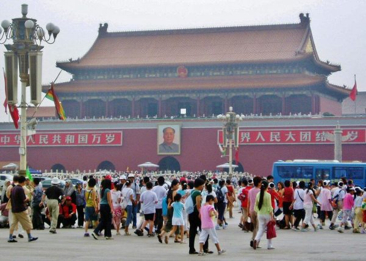

Viajes Por El Mundo
Londres
La Abadía de Westminster es el templo más antiguo de Londres. Sede de las coronaciones, la Abadía de Westminster acoge las tumbas de los monarcas y figuras históricas británicas de los últimos mil años.

El Palacio de Westminster (Palace of Westminster), también conocido como las Casas del Parlamento (Houses of Parliament), es un edificio gótico victoriano que alberga las dos Cámaras que componen el Parlamento Británico.
La plaza Piccadilly Circus es el lugar elegido por muchos londinenses y turistas como punto de encuentro gracias a su situación privilegiada y a la enorme gran oferta de ocio que existe en la zona.

Tower Bridge es uno de los símbolos de Londres. Este llamativo puente levadizo, construido con estilo victoriano, se encuentra situado junto a la Torre de Londres.

Con una altura de 110 metros, la Catedral de San Pablo es la segunda catedral más grande del mundo, justo por detrás de la Basílica de San Pedro de Roma. Esta catedral es la obra maestra de Christopher Wren.

Conocida como Millennium Wheel (Rueda del Milenio), The London Eye es un logro del diseño y la ingeniería, construido a lo largo de siete años por cientos de trabajadores provenientes de cinco países diferentes.

El Museo Británico de Londres es, además de uno de los museos más antiguos del mundo, una de las colecciones de antigüedades más grandes y famosas que existen.

Con más de 140 hectáreas de extensión, Hyde Park es el parque más grande del centro de Londres. Constituye el gran pulmón de la ciudad y sirve como lugar de esparcimiento para londinenses y turistas.
Conocido por su mercado y su atmosfera alternativa, Camden Town es un lugar popular del barrio de Camden.

El Big Ben es la torre más representativa de la ciudad de Londres y es poseedora de uno de los relojes mecánicos más grandes del mundo. Big Ben es el nombre con el que se conoce mundialmente a la torre, pero oficialmente este nombre se debe a la campana principal, que pesa unas 13,8 toneladas (la primera pesaba 16 toneladas pero se rompió y fue sustituida).

Ámsterdam
Plaza Dam
La Plaza Dam es el centro y el corazón de la ciudad de Ámsterdam, aunque hay sin duda otras plazas y lugares más bonitos que visitar todos los turistas acaban por pasar por aquí. Al tratarse de un sitio histórico, sin embargo, recomendamos a todos aquellos visitantes que se tomen un tiempo para apreciar detenidamiente su arquitectura y gozar de su ambiente. La Plaza Dam ha sido testigo de muchos eventos históricos, por ejemplo en 1808 fué la zona de recepción de Napoleón y sus tropas durante la toma de posesión de la ciudad.

Los canales de ámsterdam
Los canales de Ámsterdam Por el gran número de canales que tiene la ciudad ésta se la conoce como "La Venecia del Norte". És por ésto que un viaje a Ámsterdam no está completo sin un paseo en barco por alguno de sus bonitos canales. Visitar los canales de Ámsterdam aprovechando ésta actividad puede ser a la vez fascinante y relajante durante el día y encantador y romántico por la noche, cuando muchas de las casas y los puentes están iluminados. Los cuatro principales canales del centro de la ciudad son Prinsengracht, Herengracht, Keizersgracht y Singel. También hay otros más pequeños en el barrio de Jordaan, de los cuales el Brouwersgracht, el Bloemgracht y Leliegracht son especialmente bonitos y agradables de ver.

Plaza Leidsplein
La plaza Leidseplein es uno de los centros más populares de la ciudad de Ámsterdam para los que quieran salir de fiesta. La zona cuenta con muchos restaurantes, discotecas, cafeterías, cines y teatros. También se trata de un punto muy recomendable de visitar durante el día ya que siempre se llena de músicos callejeros, malabaristas, tragafuegos y otros artistas que dan vida a la plaza, y a menudo es espectaculo dura hasta la madrugada. En las noches cálidas de verano, los turistas y lugareños se aprovechan por igual del clima calido que permite pasar un buen rato al libre tomando copas en sus terrazas y los pubs. Si estas de viaje en Ámsterdam es casi obligatorio visitar la Plaza Leidseplein.
El parque Vondelpark
El parque Vondelpark se encuentra en el sur de Ámsterdam, a sólo cinco minutos a pie de la plaza Leidseplein y a poca distancia del Rijksmuseum, Stedelijk Museum y Van Gogh Museum. Con 10 millones de visitantes al año, el Vondelpark es el parque más famoso de los Países Bajos. Un buen lugar para hacer un descaso en tu recorrido por Ámsterdam. Hay otros parques interesantes en Ámsterdam, por lo que seguramente, vas a visitar más de uno durante tu estancia.
,
Situada en pleno corazón de Ámsterdam, la Casa de Ana Frank es uno de los edificios más significativos de su historia. Allí vivieron escondidos Ana Frank y su familia en la invasión nazi durante la Segunda Guerra Mundial. Si te apasiona la história, visitar la Casa de Ana Frank es totalmente imprescindible, además que la guía (en folleto) está en español y se explican detalladamente los acontecimientos sucedidos en cada una de las habitaciones de la casa y algunos párrafos extraídos de su famoso diario.

Dinamarca
El Jardín Botánico
El Jardín Botánico y Museo está situado en el corazón de Copenhague. El jardín es un museo vivo con espacio para la mayor colección de plantas que viven en Dinamarca. El objetivo principal es mantener taxonómicamente, estética y geográficamente su diversa colección de plantas que se utilizarán en la investigación y la enseñanza. El museo posee una de las más grandes herbarios de plantas y hongos de todo el mundo.

La Sirenita
La escultura del personaje favorito de Dinamarca lleva más de un siglo siendo un símbolo de la ciudad. Érase una vez una pequeña estatua construida para conquistar el corazón de los residentes de Copenhague. Situada sobre una roca en el puerto principal, La Sirenita da la bienvenida a todos los visitantes de la capital danesa. Esta escultura se ha convertido en un símbolo de la ciudad y es uno de los lugares preferidos por los visitantes para hacerse fotos de recuerdo. Si hace buen tiempo, no te extrañe encontrar una pequeña multitud rodeando la escultura. La pequeña estatua de bronce representa a la protagonista de un famoso cuento danés, una triste historia de amor no correspondido. Una joven sirena convence a una bruja para que se quede con su voz a cambio de unas piernas, para poder así vivir en la tierra con el príncipe que ama. Y aunque él decide casarse con una princesa, rompiéndole el corazón, la Sirenita se niega a matarlo para romper el hechizo y poder volver al mar.La Sirenita fue escrito por el famoso autor Hans Christian Andersen, que vivió en Copenhague en el siglo XIX. Lee el cuento original antes de visitar Dinamarca para apreciarla mejor. Para llegar a la estatua, recorre el bonito paseo Langelinie, que se extiende a lo largo del puerto y del agradable parque Langelinie. Se trata de uno de los lugares más agradables de la ciudad. Podrás escuchar el sonido de las gaviotas y observar los barcos que se acercan para atracar en el puerto. Tráete el almuerzo y aprovecha las instalaciones de picnic que ofrece el parque Langelinie para disfrutar de unas horas junto al mar. Se ruega a los visitantes que se abstengan de subir a la estatua, ya ha sufrido muchos daños durante el último siglo. La estatua ha sido decapitada varias veces, y en 2003 incluso la volaron con explosivos, lo que es bastante sorprendente, ya que pesa más de 175 kilogramos. La Sirenita está cerca del centro de Copenhague y se puede llegar fácilmente a pie o en bicicleta. La estación de metro Østerport está a solo unos pasos. Si te mueves en coche, encontrarás un aparcamiento de pago en el puerto. Para llegar a la estatua, recorre el bonito paseo Langelinie, que se extiende a lo largo del puerto y del agradable parque Langelinie. Se trata de uno de los lugares más agradables de la ciudad. Podrás escuchar el sonido de las gaviotas y observar los barcos que se acercan para atracar en el puerto. Tráete el almuerzo y aprovecha las instalaciones de picnic que ofrece el parque Langelinie para disfrutar de unas horas junto al mar. Se ruega a los visitantes que se abstengan de subir a la estatua, ya ha sufrido muchos daños durante el último siglo. La estatua ha sido decapitada varias veces, y en 2003 incluso la volaron con explosivos, lo que es bastante sorprendente, ya que pesa más de 175 kilogramos.

Nyhavn
El puerto de Nyhavn es el protagonista de las mejores fotografías de Copenhague. No te pierdas este canal lleno de encanto y con mucho ambiente.
Strøget
La calle más famosa de Copenhague se llama Strøget y además ostenta otro título: el de la calle peatonal más larga de Europa.
Rodeada de tiendas y restaurantes, miles de personas transitan por ella cada día (en concreto, las estadísticas indican que unas 125.000).
Palacio de Christiansborg
En el islote de Slotsholmen se encuentra el Palacio de Christiansborg de Copenhague (Christiansborg Slot), que no es precisamente uno de los más antiguos -apenas cuenta con un siglo de vida- pero sí uno de los más visitados por turistas y locales: actual sede del Parlamento, desde su torre se obtiene una de las mejores vistas de Copenhague.
París
Arco del triunfo
La construcción del Arco del Triunfo duró treinta años: Napoleón ordenó su construcción en 1806 al finalizar la batalla de Austerlitz y el Arco se concluyó durante el mandato de Louis-Philippe. El arquitecto fue Jean-François Chalgrin.
El Arco del Triunfo ha sido testigo de innumerables momentos históricos entre los que podríamos destacar: el paso de los restos mortales de Napoleón el 15 de diciembre de 1840 y los desfiles militares de las dos guerras mundiales en 1919 y 1944.

Museo del louvre
Inaugurado a finales del siglo XVIII, el Museo del Louvre es el museo más importante de Francia y uno de los más visitados del mundo. Actualmente recibe más de ocho millones de visitantes cada año.
Entre las pinturas más importantes del museo merece la pena destacar las siguientes:
La Gioconda de Leonardo da Vinci.
La Libertad Guiando al Pueblo de Delacroix.
Las Bodas de Caná de Veronés.
Entre las esculturas las obras más sobresalientes son:
La Venus de Milo de la Antigua Grecia.
El escriba sentado del Antiguo Egipto
La Victoria Alada de Samotracia del periodo Helenístico de la Antigua Grecia.

Torre Eiffel
Con un diseño creado por Gustave Eiffel, la construcción de la Torre Eiffel duró poco más de dos años y en ella trabajaron 250 obreros.
Inicialmente la torre fue objeto de controversia: los artistas del momento la consideraron monstruosa y, dada su baja rentabilidad al terminar la exposición, se planteó la posibilidad de derruirla en diferentes ocasiones.
A principios del siglo XX, con la llegada de las guerras mundiales, las autoridades encontraron su utilidad como antena de radiodifusión y con ella captaron mensajes que ayudaron a los aliados de forma decisiva.
Actualmente y gracias al auge de París como destino turístico internacional, la Torre Eiffel es el monumento más visitado del mundo con más de 7 millones de visitantes anuales.

Notre- Dame
Dedicada a la Virgen María, la Catedral de Notre Dame es una de las catedrales góticas más antiguas del mundo. Sus torres ofrecen unas vistas increíbles de París.
Las Torres de Notre-Dame
Notre Dame tiene dos torres de 69 metros en su fachada. Accediendo a la parte superior de las torres, además de apreciar las fantásticas vistas, podréis visitar el campanario en el que vivió el mítico Jorobado de Notre Dame y ver de cerca las múltiples gárgolas.
Para visitar las torres se accede a través de la entrada del lateral izquierdo de la catedral y se suben 387 empinados escalones a pie, ya que Notre Dame no dispone de ascensor.
La Cripta
Situada en el subsuelo de la plaza de Notre Dame, la cripta contiene las ruinas descubiertas durante las excavaciones de 1965. Fue abierta en 1980 y su entrada se encuentra en el número 1 de la plaza.

Museo Pompidou
Inaugurado en 1977 en uno de los barrios más antiguos de la ciudad, el Centro Pompidou fue una obra pionera de la arquitectura contemporánea, capaz de crear un gran contraste con el gris paisaje urbano de la zona gracias a los tubos de colores situados en el exterior del edificio.
Además del Museo Nacional de Arte Moderno, el Centro Pompidou alberga un centro de investigación musical y acústica y una biblioteca pública.

Barrio Montmatre
También conocido como el "barrio de los pintores", sus pequeñas y empinadas callejuelas constituyen un entramado que incluye desde los más antiguos cabarets hasta los alrededores de la Basílica del Sagrado Corazón, repletos de restaurantes con terrazas y pintores.
Montmartre fue una población independiente hasta 1860, cuando pasó a convertirse en el distrito XVIII de París.
A finales del siglo XIX el barrio adquirió muy mala fama debido a los cabarets y burdeles que se instalaron en la zona, pero diferentes artistas que lo consideraban un barrio encantador se trasladaron allí para convertirlo en el maravilloso lugar que es en la actualidad.

Hamburgo
Museo Kunsthalle
Creado en 1850 por iniciativa de la asociación de artistas de Hamburgo, el Kunsthalle comienza su existencia como espacio de exhibición local, progresivamente, dado el reconocimiento y apoyo de la sociedad civil, la colección es incrementada y un nuevo espacio es requerido.
Así, el nuevo proyecto arquitectónico es comisionado a Georg Theodor Schirrmacher y Hermann Von Der Hude, quienes concluyen la construcción en 1869.
Mercado del pescado
El Fischmarkt de Hamburgo es un popular y turístico mercado en donde podrás encontrar gran variedad de pescados y comida marina; se encuentra abierto al público los domingos muy temprano, desde las 5 de la mañana en verano y a partir de las 7 am durante el invierno.
Salir de noche por ST. Pauli
St. Pauli fue el barrio de la transgresión, el inconfundible barrio rojo que, por tamaño, supera incluso al de Amsterdam. Pero vive una nueva trasformación, porque en la Reeperbahn, alrededor de la plaza Hans-Albers-Platz y en la calle Grosse Freiheit han surgido innumerables bares, discotecas, restaurantes y teatros por los que, irremediablemente, hay que pasar si uno quiere conocer la cara más animada de la ciudad. También con locales montados con buen gusto, el barrio ‘rosa’ de St. George.
Buscar el Faro de Sankt Michaelis
El elevado campanario del principal símbolo arquitectónico de Hamburgo, la iglesia de Sankt Michaelis, era lo primero que veían los navegantes al aproximarse a esta acuática ciudad sin mar. Es el mismo que hoy sirve para orientarse en el dédalo urbanístico hamburgués.
Un paseo por el Ombligo Monumental
El entorno de la Rathausplatz, la inmensa plaza del Ayuntamiento, concentra el Hamburgo más monumental, desde el edificio del Rathaus, que se puede visitar una parte, a la Cámara de Comercio; pasando por la antigua iglesia de St. Nikolai, a cuya torre se puede subir en ascensor; la de St. Petri; las casas más antiguas de la ciudad en las calles Deichstrasse y Cremon; las Alster Arkaden (pórticos), el muelle Jungfernstieg, la Hauptbanhof y el muy recomendable Kunsthalle (museo de Bellas Artes), que acoge algunas obras maestras de la historia del arte.
Los entresijos de una ciudad-almacén
No se puede conocer Hamburgo sin dar una vuelta por su puerto, el segundo mayor de Europa y que ocupa casi la octava parte de la ciudad. Junto a él se fue construyendo en el siglo XIX un complejo de almacenes de ladrillo rojo y vidriado que creció en brazos o canales, al estilo de una Venecia postindustrial, hoy conocidos como Speicherstadt y que han sido reconvertidos en centros comerciales, culturales y de ocio.

Ir de compras por Jungfernstieg
Para las compras, la elegante calle Jungfernstieg, en la orilla sur del Alster, es el centro de Hamburgo desde que allá por el siglo XIX las familias burguesas de la ciudad gustaban de pasear por ella con la intención de buscar pareja a sus vástagos. Hasta diez galerías comerciales de vidrio, mármol y ladrillo se concentran a su alrededor, además de algunos de los más señoriales hoteles y edificios históricos. También comercial es la Mönckebergstrasse, próxima al Ayuntamiento.

México D.F,
Plaza de la constitución
Como mencionamos antes, el Zócalo de la ciudad de México es el corazón de su cultura y su vida cívica. En esta plaza se pueden admirar los murales de Diego Rivera dentro del Palacio Municipal. También se encuentra aquí la bella e impresionante Catedral Metropolitana, uno de los ejemplos de arte barroco más destacado en el continente americano.
Palacio de Bellas Artes
Esta recinto rebosa elegancia, razón por la cual es uno de los iconos arquitectónicos de México D.F. Su construcción fue ordenada por Porfirio Díaz, con la idea de dotar a la ciudad de un lugar acorde para presentar eventos artísticos como la ópera, teatro y conciertos sinfónicos.
Barrio de Coyoacán
Este es uno de los barrios más animados y visitados de México D.F. porque es el epicentro de la vida cultural del sur de la ciudad. Cuenta con hermosos jardines y plazas, librerías, cafeterías, restaurantes y bares. También destacan varios museos, entre los que sobresale la famosa Casa Azul, antigua morada de la emblemática pintora Frida Kahlo.
Xochimilco
Una de las mayores atracciones turísticas es Xochimilco, con sus paseos a bordo de las trajineras, típicas embarcaciones que te llevan por los canales prehispánicos, donde aún puede admirarse la apariencia que tenía la ciudad antes de que llegaran los colonizadores españoles.
Castillo de Chapultepec
ste palacio fue construido en la cima del cerro del bosque de Chapultepec durante la colonización española. Su uso fue principalmente religioso hasta que fue ocupado por el emperador Maximiliano de Habsburgo y su esposa Carlota. En adelante se convirtió en sede del Colegio Militar durante la invasión estadounidense.
Con los años terminó siendo residencia oficial de varios presidentes mexicanos y actualmente es la sede del Museo Nacional de Historia.
Casa de los azulejos
La Casa de los Azulejos, declarada Monumento Nacional, fue el Palacio de los Condes de Orizaba, una de las familias más opulentas del siglo XVIII. Impacta su hermosa fachada con azulejos de Talavera. En su interior sobresale su elegancia y su gran diferencia del resto de los edificios de la época.
Museo de Arqueología e Historia
Es uno de los museos más importantes del mundo en su campo. Exhibe la mayor colección de piezas arqueológicas de las culturas mesoamericanas. Entre los muchos objetos del mundo prehispánico que se encuentran en este museo destaca la famosa Piedra de Sol.
Mercado de Sonora
Si quieres tener contacto con la cultura local mexicana, no dejes de visitar el mercado de Sonora, otro de los imprescindibles de la ciudad. Son 400 tiendas distribuidas en 9 calles por y para los mexicanos. Aquí se puede encontrar de todo, desde cerámicas juguetes, imágenes religiosas, artículos decorativos o productos esotéricos.
Pekín
Pekín es una ciudad inabarcable con sus más de 20 millones de habitantes, llena de contrastes en la que puedes ver callejuelas o hutongs con casas tradicionales al lado de grandes avenidas y modernos rascacielos. No podemos negar que la ciudad tiene un gran problema de contaminación y de sobrepoblación, por lo que una efectiva forma de trasladarse entre los puntos de interés de la ciudad, evitando el denso tráfico, es el metro.
Plaza de Tiananmen
Si hay un enclave histórico en Pekín es la plaza de Tiananmen, donde encuentras monumentos que han sido claves en la historia de China, sobre todo el Palacio Imperial, más conocido como Ciudad Prohibida. – Tiananmen, la segunda plaza más grande del mundo
Palacio Imperial Ciudad Prohibida
Para visitar el palacio Imperial debes acceder por la Puerta de Tiananmen, y desde ahí harás un recorrido por una sucesión de grandes patios y fastuosos palacios y lugares de interés.
A destacar los Salones de la Armonía, la Gran Escalinata de Mármol o el Panel de los Nueve Dragones.
Y como culmen de la visita podrás subir a lo alto de la colina del parque Jingshan desde donde tendrás las mejores vistas panorámicas de la Ciudad Prohibida.
La Gran Muralla China
En tu viaje a China tienes una cita imprescindible con la Gran Muralla, para cuya visita puedes elegir el tramo que más te interese.
Desde el más cercano y turístico sector de Badaling, hasta sectores más aislado y en peor estado de conservación, como Simatai o Mutianyu.

Palacio de Verano
Uno de los rincones imprescindibles de visitar en Pekín es, sin duda, el Palacio de Verano donde los emperadores se refugiaban en la época estival.
Ahora puedes ver un conjunto de recintos palaciegos rodeados de grandes jardines, de forma que se ha convertido en un gran parque urbano muy concurrido por pekineses y turistas.

© Página realizada por C.M.L. en 2018